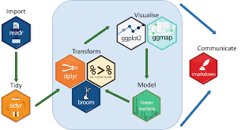
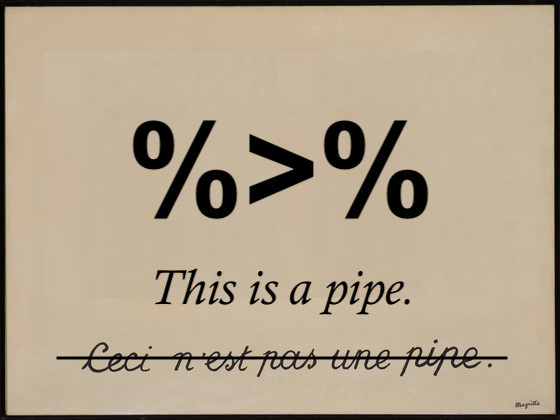
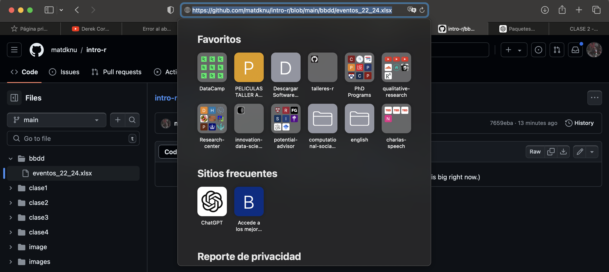

library(tidyverse)
library(readr) # Importanción de datos
library(dplyr) # Funciones de procesamiento
library(ggplot2) # Visualización de datos
library(readxl) #Datos de excel
library(httr)CLASE 2 - Introducción a Tidyverse
Curso de Introducción a R - Observatorio de Legimación de la Violencia (OLES)
Introducción
El Observatorio de Violencia y Legitimidad Social (OLES) es una plataforma que desarrolla investigación colaborativa en temáticas relacionadas con la violencia, explorando sus sentidos, formas de justificación, así como las diversas formas en que la sociedad chilena ha desarrollado procesos de construcción de legitimidad social frente a las autoridades, considerando el rol de la justicia como elemento clave en la comprensión de las transformaciones sociales que vive actualmente el país.
Este curso de R buscará introducir a los y las participantes en las nociones básicas del software en su interfaz de R Studio. Para su instalación pueden ver el siguiente vídeo pinchando [Aquí].
| Clases |
|---|
| Introducción a R |
| Procesamiento de Datos Cuantitativos con Tidyverse |
| Visualización de datos con Tidyverse |
| Introducción al análisis cuantitativo del texto |
¿Qué es Tidyverse?
El proceso de análisis de datos siempre conlleva procedimientos de limpieza de los valores que implican realizar eliminación o generación de nuevos datos. Este proceso es relevante ya que sin datos eficientes y veraces todos los procesos posteriores serán erróneos o poco eficaces.
Además, R trabaja en forma preferente con datos tabulados (en forma de tablas) y su formato preferido es el dataframe. Los datos tabulados establecen:
Cada variable esta almacenada en su propia columna.
Cada observación esta almacenada en su propia fila.
Cada tabla corresponde a un tipo de observación.

La pipa de Tidyverse %>%
La pipa (%>%) en tidyverse es un operador que facilita la escritura y lectura de código al permitir encadenar una secuencia de operaciones. La pipa toma la salida de una función y la pasa como entrada a la siguiente función, lo que hace que el código sea más limpio y más fácil de entender.
Una forma fácil de realizar es con ctrl/command + shift + m.

Funciones básicas
Primer paso: Importación de base de datos
Importaremos una base de datos de acuerdo al paquete readxl, puesto que el paquete readr no agota toda la importación de los datos.
eventos <- read_excel("bbdd/eventos_22_24.xlsx")Otra forma de importar los datos es directamente desde github.
url <- "https://github.com/matdknu/intro-r/raw/main/bbdd/eventos_22_24.xlsx"
# Crear un archivo temporal
temp_file <- tempfile(fileext = ".xlsx")
# Descargar el archivo desde GitHub
GET(url, write_disk(temp_file, overwrite = TRUE))Response [https://raw.githubusercontent.com/matdknu/intro-r/main/bbdd/eventos_22_24.xlsx]
Date: 2024-08-04 22:43
Status: 200
Content-Type: application/octet-stream
Size: 3.08 MB
<ON DISK> /var/folders/hg/s4skq8ks6g1fy2jw2fdkp0840000gn/T//Rtmpub9OvS/file2e194cf0f293.xlsx# Leer el archivo Excel en R
eventos <- read_excel(temp_file)
Procesamiento de base de datos
Explorando la base de datos.
glimpse(eventos) # Verificar la base de datosRows: 6,090
Columns: 9
$ MOTIVO <chr> "Social (Otras agrupaciones)", "Social (Otras ag…
$ TIPO <chr> "Manifestación", "Concentración", "Manifestación…
$ REGION <chr> "V REGION VALPARAISO", "REGION METROPOLITANA", "…
$ `CANTIDAD ASISTENTES` <dbl> 30, 40, 70, 50, 25, 25, 100, 60, 70, 15, 5, 15, …
$ `FECHA INICIO` <dttm> 2022-12-31, 2022-12-30, 2022-12-30, 2022-12-30,…
$ `HORA INICIO` <dttm> 1899-12-31 08:30:00, 1899-12-31 18:30:00, 1899-…
$ `FECHA TERMINO` <dttm> 2022-12-31, 2022-12-30, 2022-12-30, 2022-12-30,…
$ `HORA TERMINO` <dttm> 1899-12-31 11:00:00, 1899-12-31 21:50:00, 1899-…
$ ...9 <lgl> NA, NA, NA, NA, NA, NA, NA, NA, NA, NA, NA, NA, …Se aprecia que la base de datos tienen nombres que complejizan su manipulación. Un correcto nombre de variables debe ser
Minúsculas
Sin espacios
Sin números.
El R base nos ofrece algunas herramientos para su correcto renombramiento.
colnames(eventos)[1] <- "motivo"
colnames(eventos)[2] <- "tipo"
colnames(eventos)[3] <- "region"
colnames(eventos)[4] <- "n_asistentes"
colnames(eventos)[5] <- "fecha_inicio"
colnames(eventos)[6] <- "hora_inicio"
colnames(eventos)[7] <- "fecha_termino"
colnames(eventos)[8] <- "hora_termino"Tidyverse lo ofrece de la siguiente forma (Ojo, si ya corrieron el código de arriba les saldrá ERROR).
eventos <- eventos %>%
rename(
motivo = "MOTIVO",
tipo = "TIPO",
region = "REGION",
n_asistentes = "CANTIDAD ASISTENTES",
fecha_inicio = "FECHA INICIO",
hora_inicio = "HORA INICIO",
fecha_termino = "FECHA TERMINO",
hora_termino = "HORA TERMINO"
)Seleccionamos las variables de interés con el comando select.
eventos %>% select(motivo, region) # Variable(s) de interés.# A tibble: 6,090 × 2
motivo region
<chr> <chr>
1 Social (Otras agrupaciones) V REGION VALPARAISO
2 Social (Otras agrupaciones) REGION METROPOLITANA
3 Social (Otras agrupaciones) REGION METROPOLITANA
4 Género (Feminista) X REGION LOS LAGOS
5 Laboral X REGION LOS LAGOS
6 Laboral (Sindicato o empresa) VIII REGION BIO BIO
7 Social (Otras agrupaciones) REGION METROPOLITANA
8 Laboral REGION METROPOLITANA
9 Laboral REGION METROPOLITANA
10 Social REGION METROPOLITANA
# ℹ 6,080 more rowsFiltramos con filter:
Cuando los casos de las variables son de tipo texto, deben ir en comillas. Por ejemplo
"Paro Nacional"Cuando los casos de la variable son de tipo número, van sin comillas. Por ejemplo:
2000.
Primero, queremos solo los eventos con motivo laboral.
Segundo, queremos los eventos con motivo laboral que ocurrieron en la región de valparaíso.
eventos %>% filter(motivo == "Laboral")# A tibble: 188 × 9
motivo tipo region n_asistentes fecha_inicio hora_inicio
<chr> <chr> <chr> <dbl> <dttm> <dttm>
1 Laboral Manifest… X REG… 25 2022-12-30 00:00:00 1899-12-31 14:15:00
2 Laboral Manifest… REGIO… 60 2022-12-29 00:00:00 1899-12-31 14:15:00
3 Laboral Manifest… REGIO… 70 2022-12-29 00:00:00 1899-12-31 10:40:00
4 Laboral Desorden… X REG… 40 2022-12-20 00:00:00 1899-12-31 14:20:00
5 Laboral Desorden… X REG… 40 2022-12-19 00:00:00 1899-12-31 09:20:00
6 Laboral Concentr… VIII … 40 2022-12-15 00:00:00 1899-12-31 11:00:00
7 Laboral Concentr… VIII … 50 2022-12-07 00:00:00 1899-12-31 14:50:00
8 Laboral Manifest… X REG… 22 2022-12-06 00:00:00 1899-12-31 11:30:00
9 Laboral Concentr… VI RE… 37 2022-11-26 00:00:00 1899-12-31 10:50:00
10 Laboral Manifest… VIII … 50 2022-11-24 00:00:00 1899-12-31 10:15:00
# ℹ 178 more rows
# ℹ 3 more variables: fecha_termino <dttm>, hora_termino <dttm>, ...9 <lgl>eventos %>% filter(motivo == "Laboral", region == "V REGION VALPARAISO") #Filtramos# A tibble: 28 × 9
motivo tipo region n_asistentes fecha_inicio hora_inicio
<chr> <chr> <chr> <dbl> <dttm> <dttm>
1 Laboral Marcha c… V REG… 20 2022-09-15 00:00:00 1899-12-31 11:00:00
2 Laboral Manifest… V REG… 35 2022-09-14 00:00:00 1899-12-31 09:40:00
3 Laboral Manifest… V REG… 30 2022-09-12 00:00:00 1899-12-31 11:30:00
4 Laboral HUELGAS V REG… 70 2022-09-01 00:00:00 1899-12-31 08:40:00
5 Laboral Manifest… V REG… 20 2022-09-01 00:00:00 1899-12-31 08:30:00
6 Laboral Manifest… V REG… 1 2022-07-29 00:00:00 1899-12-31 13:45:00
7 Laboral Marcha s… V REG… 20 2022-07-20 00:00:00 1899-12-31 09:00:00
8 Laboral Manifest… V REG… 15 2022-06-01 00:00:00 1899-12-31 12:00:00
9 Laboral Concentr… V REG… 20 2022-05-01 00:00:00 1899-12-31 12:00:00
10 Laboral Marcha s… V REG… 15 2022-04-08 00:00:00 1899-12-31 16:20:00
# ℹ 18 more rows
# ℹ 3 more variables: fecha_termino <dttm>, hora_termino <dttm>, ...9 <lgl>Apliquemos ¿Cuál creen que es correcto para el uso de datos?
eventos <- eventos %>% filter(motivo == "Laboral", region == "V REGION VALPARAISO") #Filtramos
eventos_valparaiso <- eventos %>% filter(motivo == "Laboral", region == "V REGION VALPARAISO") #FiltramosHagamos un filtro numérico con operadores lógicos.
eventos100 <-eventos %>% filter(n_asistentes == 100)
head(eventos100)# A tibble: 6 × 9
motivo tipo region n_asistentes fecha_inicio hora_inicio
<chr> <chr> <chr> <dbl> <dttm> <dttm>
1 Social (Otr… Mani… REGIO… 100 2022-12-30 00:00:00 1899-12-31 09:15:00
2 Social Mani… XII R… 100 2022-12-22 00:00:00 1899-12-31 14:00:00
3 Social Mani… I REG… 100 2022-12-21 00:00:00 1899-12-31 13:45:00
4 Social (Otr… Conc… REGIO… 100 2022-12-17 00:00:00 1899-12-31 12:00:00
5 Social (Otr… Conc… REGIO… 100 2022-12-16 00:00:00 1899-12-31 09:15:00
6 Laboral (Si… Marc… REGIO… 100 2022-12-12 00:00:00 1899-12-31 11:00:00
# ℹ 3 more variables: fecha_termino <dttm>, hora_termino <dttm>, ...9 <lgl>Combinemos algunas funciones
eventos100 <-eventos %>% filter(n_asistentes == 100)%>% select(tipo, region, fecha_inicio)
head(eventos100)# A tibble: 6 × 3
tipo region fecha_inicio
<chr> <chr> <dttm>
1 Manifestación REGION METROPOLITANA 2022-12-30 00:00:00
2 Manifestación XII REGION MAGALLANES Y ANT.CHILE… 2022-12-22 00:00:00
3 Manifestación I REGION TARAPACA 2022-12-21 00:00:00
4 Concentración REGION METROPOLITANA 2022-12-17 00:00:00
5 Concentración REGION METROPOLITANA 2022-12-16 00:00:00
6 Marcha sin autorización REGION METROPOLITANA 2022-12-12 00:00:00Crear nuevas variables desde cero o a partir de las ya existentes.
eventos %>% mutate(anio_actual = 2024) %>% select(tipo, region, fecha_inicio, anio_actual)# A tibble: 6,090 × 4
tipo region fecha_inicio anio_actual
<chr> <chr> <dttm> <dbl>
1 Manifestación V REGION VALPARAISO 2022-12-31 00:00:00 2024
2 Concentración REGION METROPOLITANA 2022-12-30 00:00:00 2024
3 Manifestación REGION METROPOLITANA 2022-12-30 00:00:00 2024
4 Marcha con autorización X REGION LOS LAGOS 2022-12-30 00:00:00 2024
5 Manifestación X REGION LOS LAGOS 2022-12-30 00:00:00 2024
6 Manifestación VIII REGION BIO BIO 2022-12-30 00:00:00 2024
7 Manifestación REGION METROPOLITANA 2022-12-30 00:00:00 2024
8 Manifestación REGION METROPOLITANA 2022-12-29 00:00:00 2024
9 Manifestación REGION METROPOLITANA 2022-12-29 00:00:00 2024
10 Manifestación REGION METROPOLITANA 2022-12-29 00:00:00 2024
# ℹ 6,080 more rowseventos %>% mutate(manifestantes_cien = n_asistentes * 100) %>% select(manifestantes_cien, n_asistentes)# A tibble: 6,090 × 2
manifestantes_cien n_asistentes
<dbl> <dbl>
1 3000 30
2 4000 40
3 7000 70
4 5000 50
5 2500 25
6 2500 25
7 10000 100
8 6000 60
9 7000 70
10 1500 15
# ℹ 6,080 more rowsCrear una nueva variable con case_when .
eventos <- eventos %>%
mutate(cat_asistentes = case_when(
n_asistentes < 250 ~ "Pequeña",
n_asistentes >= 250 & n_asistentes <= 1000 ~ "Mediana",
n_asistentes > 1000 ~ "Masiva"
))
eventos %>% select(cat_asistentes, n_asistentes)# A tibble: 6,090 × 2
cat_asistentes n_asistentes
<chr> <dbl>
1 Pequeña 30
2 Pequeña 40
3 Pequeña 70
4 Pequeña 50
5 Pequeña 25
6 Pequeña 25
7 Pequeña 100
8 Pequeña 60
9 Pequeña 70
10 Pequeña 15
# ℹ 6,080 more rowsUsemos la función count para contar cuantas de ellas existen:
eventos %>% count(cat_asistentes)# A tibble: 3 × 2
cat_asistentes n
<chr> <int>
1 Masiva 82
2 Mediana 329
3 Pequeña 5679Función: Group_by
Una función que requiere un mayor nivel de abstracción es group_by .
La función group_by() en dplyr, que es parte del tidyverse, se utiliza para agrupar filas de un dataframe según una o más variables. Esta agrupación permite realizar operaciones agregadas en subconjuntos de datos, lo que es útil para resumir información, calcular estadísticas agrupadas y realizar transformaciones específicas por grupo.
Por ejemplo:
protestas_region <- eventos %>% select(motivo, region) %>%
group_by(region) %>%
count(motivo)
head(protestas_region)# A tibble: 6 × 3
# Groups: region [1]
region motivo n
<chr> <chr> <int>
1 I REGION TARAPACA Ambientalista 1
2 I REGION TARAPACA Estudiantil 1
3 I REGION TARAPACA Estudiantil (Educación secundaria) 4
4 I REGION TARAPACA Estudiantil (Educación superior) 1
5 I REGION TARAPACA Género 1
6 I REGION TARAPACA Género (Feminista) 6protestas_region_filtrada <- eventos %>% select(motivo, region) %>%
group_by(region) %>%
count(motivo) %>%
filter(n > 20) #Mayores que 20
head(protestas_region_filtrada)# A tibble: 6 × 3
# Groups: region [5]
region motivo n
<chr> <chr> <int>
1 I REGION TARAPACA Social 28
2 II REGION ANTOFAGASTA Laboral (Colegio profesores) 25
3 II REGION ANTOFAGASTA Social 28
4 III REGION ATACAMA Laboral (Colegio profesores) 24
5 IV REGION COQUIMBO Social (Otras agrupaciones) 35
6 IX REGION ARAUCANIA Étnico 153